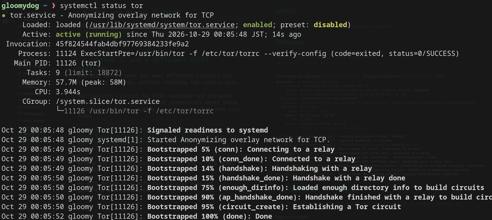
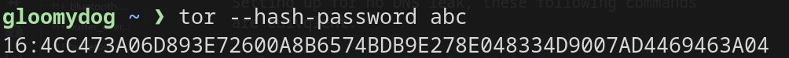
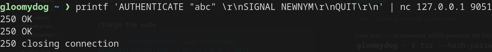

Tor on Linux
I show you how to install and run Tor on Arch Linux.
Install
sudo pacman -S tor torsocks torbrowser-launcherInitialize
sudo systemctl enable --now tor.service
systemctl status torThe status should show active (running). The log should show Bootstrapped 100%.

Check that Tor is working
curl --socks5-hostname 127.0.0.1:9050 https://check.torproject.org/api/ipExpected output:
{"IsTor":true,"IP":"185.220.101.169"}"IsTor":true means the request left through a Tor exit node. The IP is the exit node's address, not yours.
Check for DNS leaks
A request can go through Tor and still leak DNS. If the client resolves the hostname locally, the lookup goes to your normal resolver, which can see which domain you visited.
Terminal A: capture DNS packets.
sudo tcpdump -i any -n port 53Terminal B: run the following commands.
Case 1: --socks5 (DNS leak)
curl --socks5 127.0.0.1:9050 https://check.torproject.org/api/ipTerminal A shows:
127.0.0.1.51689 > 127.0.0.1.53: AAAA? check.torproject.org.
127.0.0.1.53218 > 127.0.0.1.53: A? check.torproject.org.
127.0.0.1.53 > 127.0.0.1.53218: A 116.202.120.181curl asked the local resolver (127.0.0.1:53) for the IP of check.torproject.org, then sent only the IP address to Tor. The lookup happened outside Tor, and the local resolver forwarded it upstream. This is a DNS leak.
Case 2: --socks5-hostname (no leak)
curl --socks5-hostname 127.0.0.1:9050 https://check.torproject.org/api/ipIn contrast, Terminal A shows no query for check.torproject.org. curl passes the hostname to Tor, and the exit node resolves it. The local resolver is never used in this case.
To avoid DNS leaks, the following commands are equivalent:
curl -x socks5h://127.0.0.1:9050 https://check.torproject.org/api/ip
torsocks curl https://check.torproject.org/api/ip
export ALL_PROXY=socks5h://127.0.0.1:9050Change the exit node
Tor builds a circuit of three relays: entry (guard), middle, and exit. Websites only see the exit node's IP address. You can ask Tor to build a new circuit, which usually gives you a different exit node.
Method 1: Send NEWNYM through the control port
Use this method when you want to switch circuits for all new connections.
NEWNYM is a signal sent to Tor's control port. It tells Tor to use fresh circuits for new connections, so the exit node and IP usually change.
1. Generate a hashed password
tor --hash-password <password>I use abc as the password here, which generates the following hash.

2. Add the following to /etc/tor/torrc
ControlPort 9051
HashedControlPassword 16:4CC473A06D893E72600A8B6574BDB9E278E048334D9007AD4469463A04ControlPort listens on localhost only by default. Do not expose it to other machines.
3. Restart Tor
sudo systemctl restart tor4. Send the NEWNYM signal
printf 'AUTHENTICATE "abc"\r\nSIGNAL NEWNYM\r\nQUIT\r\n' | nc 127.0.0.1 9051Expected response (250 OK twice):

5. Check that the exit IP changed
curl --socks5-hostname 127.0.0.1:9050 https://check.torproject.org/api/ipMethod 2: Use a different SOCKS username
Use this method when you want different circuits for different commands, without touching the control port.
Tor isolates circuits by SOCKS username and password. Connections that use different credentials never share a circuit, so they usually leave through different exit nodes.
curl -x socks5h://a:x@127.0.0.1:9050 https://check.torproject.org/api/ip
curl -x socks5h://b:x@127.0.0.1:9050 https://check.torproject.org/api/ipHere a and b are arbitrary usernames, and x is a dummy password.
As with Method 1, a different circuit does not guarantee a different exit IP.